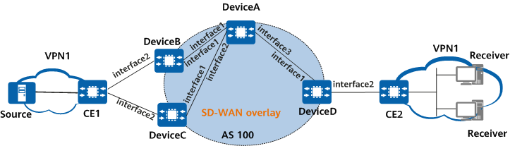

Example for Configuring Intra-AS IP Multicast over SD-WAN with Two Multicast Source PEs
Networking Requirements
On the network shown in Figure 1, SD-WAN tunnels for carrying BGP IP VPN services have been deployed. DeviceA functions as an RR and a replication point for multicast traffic forwarding. DeviceB and DeviceC function as multicast source PEs in the same AS and connect to the SD-WAN overlay network. DeviceD functions as a user-side PE and connects to the user-side network.
To provide IPv4 multicast services on the existing network for users, deploy intra-AS IP multicast over SD-WAN with two multicast source PEs. In doing so, dual-site protection is provided for the multicast source.

In this example, interface1, interface2, and interface3 represent 10GE0/0/1, 10GE0/0/2, and 10GE0/0/3, respectively.

Device |
Interface |
IP Address |
|---|---|---|
DeviceA |
10GE0/0/1 |
10.1.0.1/24 |
10GE0/0/2 |
10.1.1.1/24 |
|
10GE0/0/3 |
10.1.2.1/24 |
|
LoopBack1 |
10.0.0.1/32 |
|
LoopBack2 |
192.1.1.1/32 |
|
DeviceB |
10GE0/0/1 |
10.1.0.2/24 |
10GE0/0/2 |
192.168.1.1/24 |
|
LoopBack1 |
10.0.0.2/32 |
|
LoopBack2 |
192.1.1.2/32 |
|
DeviceC |
10GE0/0/1 |
10.1.1.3/24 |
10GE0/0/2 |
192.168.1.2/24 |
|
LoopBack1 |
10.0.0.3/32 |
|
LoopBack2 |
192.1.1.2/32 |
|
DeviceD |
10GE0/0/1 |
10.1.2.4/24 |
10GE0/0/2 |
192.168.2.1/24 |
|
LoopBack1 |
10.0.0.4/32 |
|
LoopBack2 |
192.1.1.4/32 |
Configuration Roadmap
- Configure EVPN SD-WAN on all devices and ensure that PEs can use unicast EVPN to establish SD-WAN tunnels.
- Establish BGP MVPN peer relationships among all devices and configure BGP to transmit A-D and C-multicast routes.
- Configure multicast SD-WAN on all devices and configure DeviceA as the replication point.
- Configure PIM on the devices' interfaces bound to a VPN instance and on the CEs' interfaces so that C-multicast routing entries are generated for multicast traffic forwarding.
- Configure IGMP on the multicast device's interface that is connected to the user network segment to manage multicast group members on that network segment.
Data Preparation
- Interface IP addresses listed in Table 1
- Site-IDs of DeviceA, DeviceB, DeviceC, and DeviceD, which are 11, 21, 22, and 23, respectively
- RDs of DeviceA, DeviceB, DeviceC, and DeviceD, which are 100:1, 100:2, 100:3, and 100:4, respectively
- VPN targets of DeviceA, DeviceB, DeviceC, and DeviceD, which are 9:1, 9:1, 9:1, and 9:1, respectively
- MVPN IDs of DeviceA, DeviceB, DeviceC, and DeviceD, which are 1.2.0.1, 1.2.0.2, 1.2.0.3, and 1.2.0.4, respectively
Procedure
- Configure EVPN SD-WAN.
- Assign an IP address to each interface. For detailed configurations, see Configuration Scripts.
- Configure OSPF between DeviceA (RR) and each of the CPEs (DeviceB, DeviceC, and DeviceD). For detailed configurations, see Configuration Scripts.
- Configure unicast EVPN SD-WAN and establish a unicast SD-WAN tunnel. For detailed configurations, see Configuration Scripts or SD-WAN EVPN Configuration.
- Establish a peer relationship between the RR (DeviceA) and each of the CPEs (DeviceB, DeviceC, and DeviceD).# Configure DeviceA.
<HUAWEI> system-view [HUAWEI] sysname DeviceA [DeviceA] bgp 100 [DeviceA-bgp] peer 10.0.0.2 as-number 100 [DeviceA-bgp] peer 10.0.0.2 connect-interface LoopBack1 [DeviceA-bgp] peer 10.0.0.3 as-number 100 [DeviceA-bgp] peer 10.0.0.3 connect-interface LoopBack1 [DeviceA-bgp] peer 10.0.0.4 as-number 100 [DeviceA-bgp] peer 10.0.0.4 connect-interface LoopBack1 [DeviceA-bgp] quit
# Configure DeviceB.<HUAWEI> system-view [HUAWEI] sysname DeviceB [DeviceB] bgp 100 [DeviceB-bgp] peer 10.0.0.1 as-number 100 [DeviceB-bgp] peer 10.0.0.1 connect-interface LoopBack1 [DeviceB-bgp] quit
# Configure DeviceC.<HUAWEI> system-view [HUAWEI] sysname DeviceC [DeviceC] bgp 100 [DeviceC-bgp] peer 10.0.0.1 as-number 100 [DeviceC-bgp] peer 10.0.0.1 connect-interface LoopBack1 [DeviceC-bgp] quit
# Configure DeviceD.<HUAWEI> system-view [HUAWEI] sysname DeviceD [DeviceD] bgp 100 [DeviceD-bgp] peer 10.0.0.1 as-number 100 [DeviceD-bgp] peer 10.0.0.1 connect-interface LoopBack1 [DeviceD-bgp] quit
- Configure a VPN instance and connect the CE to the device.# Configure DeviceA.
[DeviceA] ip vpn-instance VPN1 [DeviceA-vpn-instance-VPN1] ipv4-family [DeviceA-vpn-instance-VPN1-af-ipv4] route-distinguisher 100:1 [DeviceA-vpn-instance-VPN1-af-ipv4] vpn-target 9:1 [DeviceA-vpn-instance-VPN1-af-ipv4] quit [DeviceA-vpn-instance-VPN1] quit
# Configure DeviceB.[DeviceB] ip vpn-instance VPN1 [DeviceB-vpn-instance-VPN1] ipv4-family [DeviceB-vpn-instance-VPN1-af-ipv4] route-distinguisher 100:2 [DeviceB-vpn-instance-VPN1-af-ipv4] vpn-target 9:1 [DeviceB-vpn-instance-VPN1-af-ipv4] quit [DeviceB-vpn-instance-VPN1] quit [DeviceB] interface 10GE0/0/2 [DeviceB-10GE0/0/2] ip binding vpn-instance VPN1 [DeviceB-10GE0/0/2] ip address 192.168.1.1 24 [DeviceB-10GE0/0/2] quit
# Configure DeviceC.[DeviceC] ip vpn-instance VPN1 [DeviceC-vpn-instance-VPN1] ipv4-family [DeviceC-vpn-instance-VPN1-af-ipv4] route-distinguisher 100:3 [DeviceC-vpn-instance-VPN1-af-ipv4] vpn-target 9:1 [DeviceC-vpn-instance-VPN1-af-ipv4] quit [DeviceC-vpn-instance-VPN1] quit [DeviceC] interface 10GE0/0/2 [DeviceC-10GE0/0/2] ip binding vpn-instance VPN1 [DeviceC-10GE0/0/2] ip address 192.168.1.2 24 [DeviceC-10GE0/0/2] quit
# Configure DeviceD.[DeviceD] ip vpn-instance VPN1 [DeviceD-vpn-instance-VPN1] ipv4-family [DeviceD-vpn-instance-VPN1-af-ipv4] route-distinguisher 100:4 [DeviceD-vpn-instance-VPN1-af-ipv4] vpn-target 9:1 [DeviceD-vpn-instance-VPN1-af-ipv4] quit [DeviceD-vpn-instance-VPN1] quit [DeviceD] interface 10GE0/0/2 [DeviceD-10GE0/0/2] ip binding vpn-instance VPN1 [DeviceD-10GE0/0/2] ip address 192.168.2.1 24 [DeviceD-10GE0/0/2] quit
- Configure OSPF multi-instance to import VPN routes.# Configure DeviceA as the RR.
[DeviceA] ospf 2 vpn-instance VPN1 [DeviceA-ospf-2] import-route bgp [DeviceA-ospf-2] area 0.0.0.0 [DeviceA-ospf-2] quit [DeviceA] bgp 100 [DeviceA-bgp] ipv4-family vpn-instance VPN1 [DeviceA-bgp-VPN1] import-route ospf 2 [DeviceA-bgp-VPN1] quit [DeviceA-bgp] quit
# Configure DeviceB. The configurations on DeviceC and DeviceD are similar to that on DeviceB. For detailed configurations, see Configuration Scripts.[DeviceB] ospf 2 vpn-instance VPN1 [DeviceB-ospf-2] import-route bgp [DeviceB-ospf-2] area 0.0.0.0 [DeviceB-ospf-2] quit [DeviceB] bgp 100 [DeviceB-bgp] ipv4-family vpn-instance VPN1 [DeviceB-bgp-VPN1] import-route ospf 2 [DeviceB-bgp-VPN1] quit [DeviceB-bgp] quit [DeviceB] interface 10GE0/0/2 [DeviceB-10GE0/0/2] ospf enable 2 area 0.0.0.0 [DeviceB-10GE0/0/2] quit
- Establish BGP MVPN peer relationships.# Configure DeviceA as the RR.
[DeviceA] bgp 100 [DeviceA-bgp] ipv4-family mvpn [DeviceA-bgp-af-mvpn] undo policy vpn-target [DeviceA-bgp-af-mvpn] peer 10.0.0.2 enable [DeviceA-bgp-af-mvpn] peer 10.0.0.2 reflect-client [DeviceA-bgp-af-mvpn] peer 10.0.0.2 advertise-community [DeviceA-bgp-af-mvpn] peer 10.0.0.3 enable [DeviceA-bgp-af-mvpn] peer 10.0.0.3 reflect-client [DeviceA-bgp-af-mvpn] peer 10.0.0.3 advertise-community [DeviceA-bgp-af-mvpn] peer 10.0.0.4 enable [DeviceA-bgp-af-mvpn] peer 10.0.0.4 reflect-client [DeviceA-bgp-af-mvpn] peer 10.0.0.4 advertise-community [DeviceA-bgp-af-mvpn] quit [DeviceA-bgp] quit
# Configure DeviceB as a source-side CPE. The configurations on DeviceC and DeviceD are similar to that on DeviceB. For detailed configurations, see Configuration Scripts.[DeviceB] bgp 100 [DeviceB-bgp] ipv4-family mvpn [DeviceB-bgp-af-mvpn] peer 10.0.0.94 enable [DeviceB-bgp-af-mvpn] peer 10.0.0.94 advertise-community [DeviceB-bgp-af-mvpn] quit [DeviceB-bgp] quit
After the preceding configurations are complete, run the display bgp mvpn all peer command on the devices. The command outputs show that BGP MVPN peer relationships are established between DeviceA and DeviceB, between DeviceA and DeviceC, and between DeviceA and DeviceD. The following example uses the command output on DeviceB.[DeviceB] display bgp mvpn all peer BGP local router ID : 1.1.0.2 Local AS number : 100 Total number of peers : 1 Peers in established state : 1 Peer V AS MsgRcvd MsgSent OutQ Up/Down State PrefRcv 10.0.0.1 4 100 43 42 0 00:29:28 Established 1 - Configure multicast SD-WAN.# Configure DeviceA as an RR and the replication point for receiving and sending packets.
[DeviceA] multicast mvpn 1.2.0.1 [DeviceA] ip vpn-instance VPN1 [DeviceA-vpn-instance-VPN1] ipv4-family [DeviceA-vpn-instance-VPN1-af-ipv4] multicast routing-enable [DeviceA-vpn-instance-VPN1-af-ipv4] mvpn [DeviceA-vpn-instance-VPN1-af-ipv4-mvpn] c-multicast signaling bgp [DeviceA-vpn-instance-VPN1-af-ipv4-mvpn] sender-enable [DeviceA-vpn-instance-VPN1-af-ipv4-mvpn] spt-only mode [DeviceA-vpn-instance-VPN1-af-ipv4-mvpn] sd-wan enable [DeviceA-vpn-instance-VPN1-af-ipv4-mvpn] quit [DeviceA-vpn-instance-VPN1-af-ipv4] quit [DeviceA-vpn-instance-VPN1] quit
# Configure DeviceB as the source-side CPE.[DeviceB] multicast mvpn 1.2.0.2 [DeviceB] ip vpn-instance VPN1 [DeviceB-vpn-instance-VPN1] ipv4-family [DeviceB-vpn-instance-VPN1-af-ipv4] multicast routing-enable [DeviceB-vpn-instance-VPN1-af-ipv4] mvpn [DeviceB-vpn-instance-VPN1-af-ipv4-mvpn] c-multicast signaling bgp [DeviceB-vpn-instance-VPN1-af-ipv4-mvpn] sender-enable [DeviceB-vpn-instance-VPN1-af-ipv4-mvpn] spt-only mode [DeviceB-vpn-instance-VPN1-af-ipv4-mvpn] sd-wan enable [DeviceB-vpn-instance-VPN1-af-ipv4-mvpn] quit [DeviceB-vpn-instance-VPN1-af-ipv4] quit [DeviceB-vpn-instance-VPN1] quit
# Configure DeviceC as a source-side CPE.[DeviceC] multicast mvpn 1.2.0.3 [DeviceC] ip vpn-instance VPN1 [DeviceC-vpn-instance-VPN1] ipv4-family [DeviceC-vpn-instance-VPN1-af-ipv4] multicast routing-enable [DeviceC-vpn-instance-VPN1-af-ipv4] mvpn [DeviceC-vpn-instance-VPN1-af-ipv4-mvpn] c-multicast signaling bgp [DeviceC-vpn-instance-VPN1-af-ipv4-mvpn] sender-enable [DeviceC-vpn-instance-VPN1-af-ipv4-mvpn] spt-only mode [DeviceC-vpn-instance-VPN1-af-ipv4-mvpn] sd-wan enable [DeviceC-vpn-instance-VPN1-af-ipv4-mvpn] quit [DeviceC-vpn-instance-VPN1-af-ipv4] quit [DeviceC-vpn-instance-VPN1] quit
# Configure DeviceD as the receiver-side CPE and add a static RPF route to DeviceA.[DeviceD] multicast mvpn 1.2.0.4 [DeviceD] ip vpn-instance VPN1 [DeviceD-vpn-instance-VPN1] ipv4-family [DeviceD-vpn-instance-VPN1-af-ipv4] multicast routing-enable [DeviceD-vpn-instance-VPN1-af-ipv4] mvpn [DeviceD-vpn-instance-VPN1-af-ipv4-mvpn] c-multicast signaling bgp [DeviceD-vpn-instance-VPN1-af-ipv4-mvpn] spt-only mode [DeviceD-vpn-instance-VPN1-af-ipv4-mvpn] sd-wan enable [DeviceD-vpn-instance-VPN1-af-ipv4-mvpn] quit [DeviceD-vpn-instance-VPN1-af-ipv4] quit [DeviceD-vpn-instance-VPN1] quit [DeviceD] ip rpf-route-static vpn-instance VPN1 0.0.0.0 0 site 11
- Configure PIM.# Configure DeviceA as an RR and a replication point, and configure PIM on the loopback interface of DeviceA.
[DeviceA] interface LoopBack2 [DeviceA-LoopBack2] ip binding vpn-instance VPN1 [DeviceA-LoopBack2] ip address 192.1.1.1 255.255.255.255 [DeviceA-LoopBack2] pim sm [DeviceA-LoopBack2] ospf enable 2 area 0.0.0.0 [DeviceA-LoopBack2] quit
# Configure DeviceB. The configurations on DeviceC and DeviceD are similar to that on DeviceB. For detailed configurations, see Configuration Scripts.[DeviceB] interface 10GE0/0/2 [DeviceB-10GE0/0/2] pim sm [DeviceB-10GE0/0/2] quit
- Configure static IGMP join on the receiver-side PE.# Configure DeviceD.
[DeviceD] interface 10GE0/0/2 [DeviceD-10GE0/0/2] igmp enable [DeviceD-10GE0/0/2] igmp static-group 225.0.0.1 source 192.168.1.100 [DeviceD-10GE0/0/2] quit
- Configure a static RP. To minimize the impact of interface flapping, configure a loopback interface as the RP.
No (*, G) entry exists on DeviceA (the replication point), so the RP does not need to be configured.
# Configure DeviceB.[DeviceB] interface LoopBack2 [DeviceB-LoopBack2] ip binding vpn-instance VPN1 [DeviceB-LoopBack2] ip address 192.1.1.2 255.255.255.255 [DeviceB-LoopBack2] pim sm [DeviceB-LoopBack2] ospf enable 2 area 0.0.0.0 [DeviceB-LoopBack2] quit [DeviceB] pim vpn-instance VPN1 [DeviceB-pim-VPN1] static-rp 192.1.1.2 [DeviceB-pim-VPN1] quit
# Configure DeviceC. (The IP address of the static RP on DeviceC must be the same as that of the static RP on DeviceB, or configure an anycast IP address instead.)[DeviceC] interface LoopBack2 [DeviceC-LoopBack2] ip binding vpn-instance VPN1 [DeviceC-LoopBack2] ip address 192.1.1.2 255.255.255.255 [DeviceC-LoopBack2] pim sm [DeviceC-LoopBack2] ospf enable 2 area 0.0.0.0 [DeviceC-LoopBack2] quit [DeviceC] pim vpn-instance VPN1 [DeviceC-pim-VPN1] static-rp 192.1.1.2 [DeviceC-pim-VPN1] quit
The configuration on DeviceD is similar to that on DeviceB. For detailed configurations, see Configuration Scripts.
Verifying the Configuration
# Run the display pim vpn-instance routing-table command on the device to check the PIM routing table of a specified VPN instance.
[DeviceA] display pim vpn-instance VPN1 routing-table
VPN-Instance: VPN1
Total 0 (*, G) entry; 1 (S, G) entries
(192.168.1.100, 225.0.0.1)
RP: NULL
Protocol: pim-sm, Flag: SPT LOC SG_RCVR
UpTime: 00:44:51
Upstream interface: through-BGP, Refresh time: 00:44:51
Upstream neighbor: site 21
RPF prime neighbor: site 21
Downstream interface(s) information:
Total number of downstreams: 1
1:pseudo
Protocol: BGP, UpTime: 00:44:51, Expires: --
[DeviceB] display pim vpn-instance VPN1 routing-table VPN-Instance: VPN1 Total 0 (*, G) entry; 1 (S, G) entries (192.168.1.100, 225.0.0.1) RP: 192.1.1.2 (local) Protocol: pim-sm, Flag: SPT SG_RCVR UpTime: 00:44:51 Upstream interface: 10GE 0/0/2, Refresh time: 00:44:51 Upstream neighbor: NULL RPF prime neighbor: NULL Downstream interface(s) information: Total number of downstreams: 1 1: pseudo Protocol: BGP, UpTime: 00:44:51, Expires: --
[DeviceD] display pim vpn-instance VPN1 routing-table VPN-Instance: VPN1 Total 0 (*, G) entry; 1 (S, G) entries (192.168.1.100, 225.0.0.1) RP: 192.1.1.4 (local) Protocol: pim-sm, Flag: SPT SG_RCVR UpTime: 00:43:53 Upstream interface: through-BGP, Refresh time: 00:42:53 Upstream neighbor: site 11 RPF prime neighbor: site 11 Downstream interface(s) information: Total number of downstreams: 1 1: 10GE 0/0/2 Protocol: static, UpTime: 00:43:53, Expires: -
The command outputs show that a multicast SD-WAN tunnel has been established between the inbound interfaces of DeviceA and DeviceD through BGP peer relationships.
# Run the display mvpn sdwan command to view SD-WAN information about MVPN services.
[DeviceA] display mvpn vpn-instance VPN1 sdwan
MVPN local SD-WAN information for VPN-Instance: VPN1
Tunnel type: SD-WAN
Tunnel state: --
Root: (192.168.1.100, 225.0.0.1, SD-WAN Site 21)
Leaf:
0: SD-WAN Site 11 (local)
Tunnel type: SD-WAN
Tunnel state: --
Root: (192.168.1.100, 225.0.0.1, SD-WAN Site 11) (local)
Leaf:
0: SD-WAN Site 23
[DeviceB] display mvpn vpn-instance VPN1 sdwan
MVPN local SD-WAN information for VPN-Instance: VPN1
Tunnel type: SD-WAN
Tunnel state: --
Root: (192.168.1.100, 225.0.0.1, SD-WAN Site 21) (local)
Leaf:
0: SD-WAN Site 11
[DeviceD] display mvpn vpn-instance VPN1 sdwan
MVPN local SD-WAN information for VPN-Instance: VPN1
Tunnel type: SD-WAN
Tunnel state: --
Root: (192.168.1.100, 225.0.0.1, SD-WAN Site 11)
Leaf:
1: SD-WAN Site 23 (local)
The command outputs show that a multicast SD-WAN tunnel has been established between DeviceD and DeviceA and between DeviceA and DeviceB through BGP peer relationships, but no multicast SD-WAN tunnel has been established between DeviceA and DeviceC.
Configuration Scripts
-
# sysname DeviceA # multicast mvpn 1.2.0.1 # ip vpn-instance VPN1 vn-id 10 ipv4-family route-distinguisher 100:1 export route-policy rr1 evpn vpn-target 9:1 export-extcommunity evpn vpn-target 9:1 export-extcommunity vpn-target 9:1 import-extcommunity evpn vpn-target 9:1 import-extcommunity multicast routing-enable mvpn sd-wan enable sender-enable spt-only mode c-multicast signaling bgp # interface 10GE0/0/1 ip address 10.1.0.1 255.255.255.0 ospf enable 1 area 0.0.0.0 # interface 10GE0/0/2 ip address 10.1.1.1 255.255.255.0 ospf enable 1 area 0.0.0.0 # interface 10GE0/0/3 ip address 10.1.2.1 255.255.255.0 ospf enable 1 area 0.0.0.0 # interface LoopBack1 ip address 10.0.0.1 255.255.255.255 ospf enable 1 area 0.0.0.0 # interface LoopBack2 ip binding vpn-instance VPN1 ip address 192.1.1.1 255.255.255.255 pim sm ospf enable 2 area 0.0.0.0 # interface Tunnel0 ip address 10.2.0.1 255.255.255.255 tunnel-protocol sd-wan sd-wan service enable # interface Tunnel1 ip binding vpn-instance VPN1 ip address 192.0.1.1 255.255.255.255 tunnel-protocol sd-wan sd-wan service enable # bgp 100 router-id 1.1.0.1 private-4-byte-as enable peer 10.0.0.2 as-number 100 peer 10.0.0.2 connect-interface LoopBack1 peer 10.0.0.3 as-number 100 peer 10.0.0.3 connect-interface LoopBack1 peer 10.0.0.4 as-number 100 peer 10.0.0.4 connect-interface LoopBack1 # ipv4-family unicast peer 10.0.0.2 enable peer 10.0.0.2 reflect-client peer 10.0.0.3 enable peer 10.0.0.3 reflect-client peer 10.0.0.4 enable peer 10.0.0.4 reflect-client # ipv4-family mvpn undo policy vpn-target peer 10.0.0.2 enable peer 10.0.0.2 reflect-client peer 10.0.0.2 advertise-community peer 10.0.0.3 enable peer 10.0.0.3 reflect-client peer 10.0.0.3 advertise-community peer 10.0.0.4 enable peer 10.0.0.4 reflect-client peer 10.0.0.4 advertise-community # ipv4-family vpn-instance VPN1 import-route direct import-route ospf 2 advertise l2vpn evpn # l2vpn-family evpn undo policy vpn-target peer 10.0.0.2 enable peer 10.0.0.2 route-policy cpe1 export peer 10.0.0.2 reflect-client peer 10.0.0.2 advertise-community peer 10.0.0.2 advertise encap-type sd-wan peer 10.0.0.3 enable peer 10.0.0.3 route-policy cpe2 export peer 10.0.0.3 reflect-client peer 10.0.0.3 advertise-community peer 10.0.0.3 advertise encap-type sd-wan peer 10.0.0.4 enable peer 10.0.0.4 route-policy cpe3 export peer 10.0.0.4 reflect-client peer 10.0.0.4 advertise-community peer 10.0.0.4 advertise encap-type sd-wan # ipv4-family sd-wan peer 10.0.0.2 enable peer 10.0.0.2 reflect-client peer 10.0.0.2 advertise-community peer 10.0.0.3 enable peer 10.0.0.3 reflect-client peer 10.0.0.3 advertise-community peer 10.0.0.4 enable peer 10.0.0.4 reflect-client peer 10.0.0.4 advertise-community # ospf 1 area 0.0.0.0 # ospf 2 vpn-instance VPN1 import-route bgp area 0.0.0.0 # ip extcommunity-list priority-color basic cpe1 index 10 permit 10:21 ip extcommunity-list priority-color basic cpe2 index 10 permit 10:22 ip extcommunity-list priority-color basic cpe3 index 10 permit 10:23 # route-policy cpe1 permit node 10 if-match extcommunity-list priority-color cpe1 apply ip-address next-hop 10.0.0.1 apply extcommunity priority-color 10:11 # route-policy cpe1 permit node 11 # route-policy cpe2 permit node 10 if-match extcommunity-list priority-color cpe2 apply ip-address next-hop 10.0.0.1 apply extcommunity priority-color 10:11 # route-policy cpe2 permit node 11 # route-policy cpe3 permit node 10 if-match extcommunity-list priority-color cpe3 apply ip-address next-hop 10.0.0.1 apply extcommunity priority-color 10:11 # route-policy cpe3 permit node 11 # route-policy rr1 permit node 10 apply extcommunity priority-color 10:11 # ip route-static 1.0.0.2 255.255.255.255 color 21 ip route-static 1.0.0.3 255.255.255.255 color 22 ip route-static 1.0.0.4 255.255.255.255 color 23 # evpn site 11 site-type rr system-id 1.0.0.1 routing-domain 1 name sdwan transport-network 1 name sdwan transport-network-port 1 routing-domain sdwan transport-network sdwan source-interface 10GE0/0/1 # dtls server dtls server enable listening-port 10000 listening-ip 10.0.0.1 # return
-
# sysname DeviceB # multicast mvpn 1.2.0.2 # ip vpn-instance VPN1 vn-id 10 ipv4-family route-distinguisher 100:2 export route-policy cpe1 evpn vpn-target 9:1 export-extcommunity vpn-target 9:1 export-extcommunity evpn vpn-target 9:1 import-extcommunity vpn-target 9:1 import-extcommunity evpn multicast routing-enable mvpn sd-wan enable sender-enable spt-only mode c-multicast signaling bgp # interface 10GE0/0/1 ip address 10.1.0.2 255.255.255.0 ospf enable 1 area 0.0.0.0 # interface 10GE0/0/2 ip binding vpn-instance VPN1 ip address 192.168.1.1 255.255.255.0 pim sm ospf enable 2 area 0.0.0.0 # interface LoopBack1 ip address 10.0.0.2 255.255.255.255 ospf enable 1 area 0.0.0.0 # interface LoopBack2 ip binding vpn-instance VPN1 ip address 192.1.1.2 255.255.255.255 pim sm ospf enable 2 area 0.0.0.0 # interface Tunnel0 ip address 10.2.0.2 255.255.255.255 tunnel-protocol sd-wan sd-wan service enable # interface Tunnel1 ip binding vpn-instance VPN1 ip address 192.0.1.2 255.255.255.255 tunnel-protocol sd-wan sd-wan service enable # bgp 100 router-id 1.1.0.2 private-4-byte-as enable peer 10.0.0.1 as-number 100 peer 10.0.0.1 connect-interface LoopBack1 # ipv4-family unicast peer 10.0.0.1 enable # ipv4-family mvpn policy vpn-target peer 10.0.0.1 enable peer 10.0.0.1 advertise-community # ipv4-family vpn-instance VPN1 import-route direct import-route ospf 2 advertise l2vpn evpn # l2vpn-family evpn undo policy vpn-target peer 10.0.0.1 enable peer 10.0.0.1 advertise-community peer 10.0.0.1 advertise encap-type sd-wan # ipv4-family sd-wan peer 10.0.0.1 enable peer 10.0.0.1 advertise-community # ospf 1 area 0.0.0.0 # ospf 2 vpn-instance VPN1 import-route bgp area 0.0.0.0 # route-policy cpe1 permit node 10 apply extcommunity priority-color 10:21 # pim vpn-instance VPN1 static-rp 192.1.1.2 # ip route-static 1.0.0.1 255.255.255.255 color 11 # evpn site 21 site-type cpe system-id 1.0.0.2 routing-domain 1 name sdwan transport-network 1 name sdwan transport-network-port 1 routing-domain sdwan transport-network sdwan source-interface 10GE0/0/1 # dtls client peer system-id 1.0.0.1 ip 10.0.0.1 port 10000 # return
-
# sysname DeviceC # multicast mvpn 1.2.0.3 # ip vpn-instance VPN1 vn-id 10 ipv4-family route-distinguisher 100:3 export route-policy cpe2 evpn vpn-target 9:1 export-extcommunity evpn vpn-target 9:1 export-extcommunity vpn-target 9:1 import-extcommunity evpn vpn-target 9:1 import-extcommunity multicast routing-enable mvpn sd-wan enable sender-enable spt-only mode c-multicast signaling bgp # interface 10GE0/0/1 ip address 10.1.1.3 255.255.255.0 ospf enable 1 area 0.0.0.0 # interface 10GE0/0/2 ip binding vpn-instance VPN1 ip address 192.168.1.2 255.255.255.0 pim sm ospf enable 2 area 0.0.0.0 # interface LoopBack1 ip address 10.0.0.3 255.255.255.255 ospf enable 1 area 0.0.0.0 # interface LoopBack2 ip binding vpn-instance VPN1 ip address 192.1.1.2 255.255.255.255 pim sm ospf enable 2 area 0.0.0.0 # interface Tunnel0 ip address 10.2.0.3 255.255.255.255 tunnel-protocol sd-wan sd-wan service enable # interface Tunnel1 ip binding vpn-instance VPN1 ip address 192.0.1.3 255.255.255.255 tunnel-protocol sd-wan sd-wan service enable # bgp 100 router-id 1.1.0.3 private-4-byte-as enable peer 10.0.0.1 as-number 100 peer 10.0.0.1 connect-interface LoopBack1 # ipv4-family unicast peer 10.0.0.1 enable # ipv4-family mvpn policy vpn-target peer 10.0.0.1 enable peer 10.0.0.1 advertise-community # ipv4-family vpn-instance VPN1 import-route direct import-route ospf 2 advertise l2vpn evpn # l2vpn-family evpn undo policy vpn-target peer 10.0.0.1 enable peer 10.0.0.1 advertise-community peer 10.0.0.1 advertise encap-type sd-wan # ipv4-family sd-wan peer 10.0.0.1 enable peer 10.0.0.1 advertise-community # ospf 1 area 0.0.0.0 # ospf 2 vpn-instance VPN1 import-route bgp area 0.0.0.0 # route-policy cpe2 permit node 10 apply extcommunity priority-color 10:22 # pim vpn-instance VPN1 static-rp 192.1.1.2 # ip route-static 1.0.0.1 255.255.255.255 color 11 # evpn site 22 site-type cpe system-id 1.0.0.3 routing-domain 1 name sdwan transport-network 1 name sdwan transport-network-port 1 routing-domain sdwan transport-network sdwan source-interface 10GE0/0/1 # dtls client peer system-id 1.0.0.1 ip 10.0.0.1 port 10000 # return
-
# sysname DeviceD # multicast mvpn 1.2.0.4 # ip vpn-instance VPN1 vn-id 10 ipv4-family route-distinguisher 100:4 export route-policy cpe3 evpn vpn-target 9:1 export-extcommunity evpn vpn-target 9:1 export-extcommunity vpn-target 9:1 import-extcommunity evpn vpn-target 9:1 import-extcommunity multicast routing-enable mvpn sd-wan enable spt-only mode c-multicast signaling bgp # interface 10GE0/0/1 ip address 10.1.2.4 255.255.255.0 ospf enable 1 area 0.0.0.0 # interface 10GE0/0/2 ip binding vpn-instance VPN1 ip address 192.168.2.1 255.255.255.0 pim sm igmp enable igmp static-group 225.0.0.1 source 192.168.1.3 ospf enable 2 area 0.0.0.0 # interface LoopBack1 ip address 10.0.0.4 255.255.255.255 ospf enable 1 area 0.0.0.0 # interface LoopBack2 ip binding vpn-instance VPN1 ip address 192.1.1.4 255.255.255.255 pim sm ospf enable 2 area 0.0.0.0 # interface Tunnel0 ip address 10.2.0.4 255.255.255.255 tunnel-protocol sd-wan sd-wan service enable # interface Tunnel1 ip binding vpn-instance VPN1 ip address 192.0.1.4 255.255.255.255 tunnel-protocol sd-wan sd-wan service enable # bgp 100 router-id 1.1.0.4 private-4-byte-as enable peer 10.0.0.1 as-number 100 peer 10.0.0.1 connect-interface LoopBack1 # ipv4-family unicast peer 10.0.0.1 enable # ipv4-family mvpn undo policy vpn-target peer 10.0.0.1 enable peer 10.0.0.1 advertise-community # ipv4-family vpn-instance VPN1 import-route direct import-route ospf 2 advertise l2vpn evpn # l2vpn-family evpn undo policy vpn-target peer 10.0.0.1 enable peer 10.0.0.1 advertise-community peer 10.0.0.1 advertise encap-type sd-wan # ipv4-family sd-wan peer 10.0.0.1 enable peer 10.0.0.1 advertise-community # ospf 1 area 0.0.0.0 # ospf 2 vpn-instance VPN1 import-route bgp area 0.0.0.0 # route-policy cpe3 permit node 10 apply extcommunity priority-color 10:23 # pim vpn-instance VPN1 static-rp 192.1.1.4 # ip route-static 1.0.0.1 255.255.255.255 color 11 ip rpf-route-static vpn-instance VPN1 0.0.0.0 0 site 11 # evpn site 23 site-type cpe system-id 1.0.0.4 routing-domain 1 name sdwan transport-network 1 name sdwan transport-network-port 1 routing-domain sdwan transport-network sdwan source-interface 10GE0/0/1 # dtls client peer system-id 1.0.0.1 ip 10.0.0.1 port 10000 # return